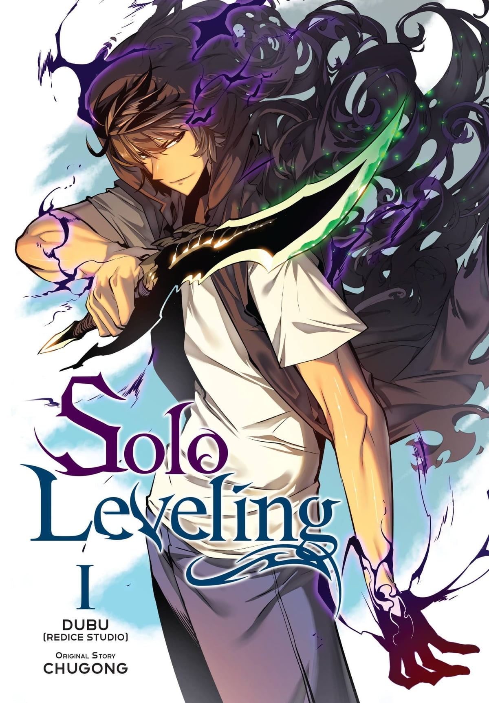
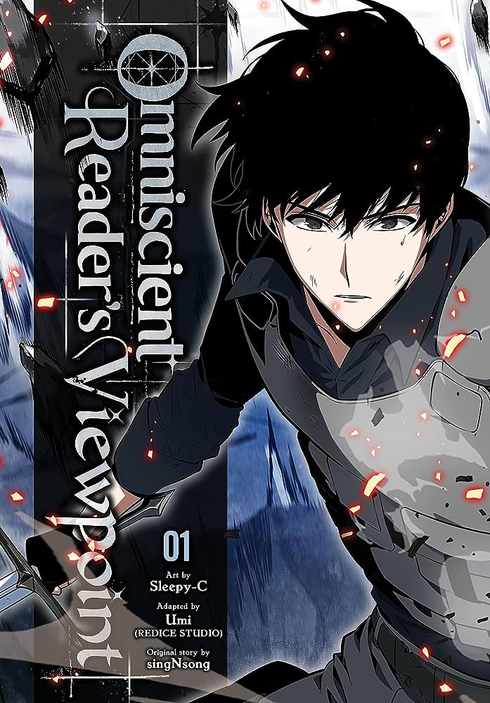
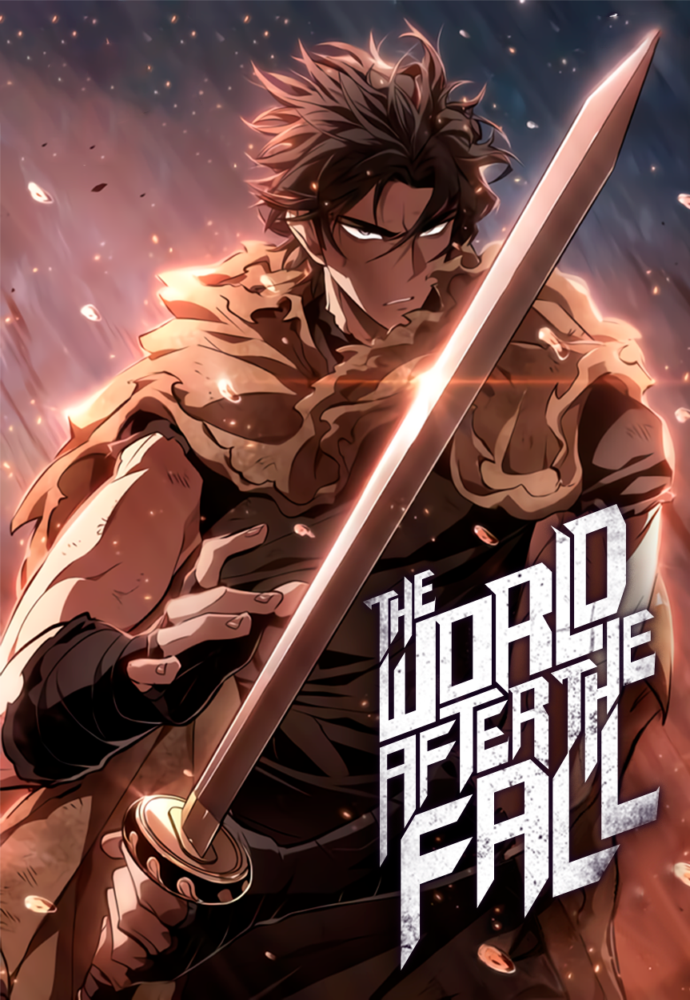
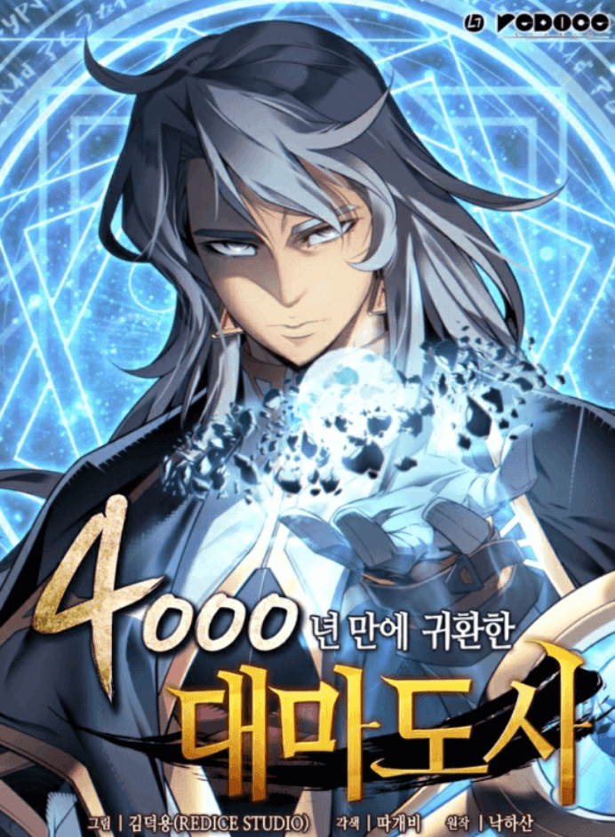
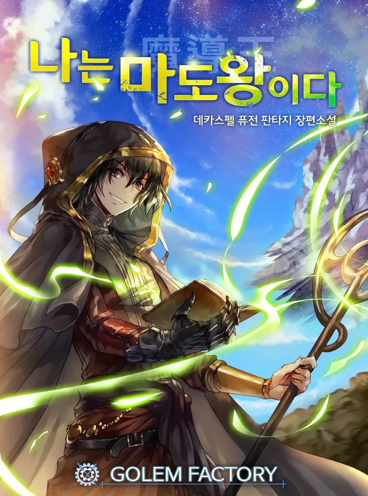

In a world where awakened beings called “Hunters” must battle deadly monsters to protect humanity, Sung Jinwoo, nicknamed “the weakest hunter of all mankind,” finds himself in a constant struggle for survival. One day, after a brutal encounter in an overpowered dungeon wipes out his party and threatens to end his life, a mysterious System chooses him as its sole player: Jinwoo has been granted the rare opportunity to level up his abilities, possibly beyond any known limits. Follow Jinwoo’s journey as he takes on ever-stronger enemies, both human and monster, to discover the secrets deep within the dungeons and the ultimate extent of his powers.
Synopsis: Back then, Dok-Ja had no idea. He had no idea his favorite web novel 'Three Ways to Survive the Apocalypse' was going to come to life, and that he would become the only person to know how the world was going to end. He also had no idea he would end up becoming the protagonist of this novel-turned-reality. Now, Dok-Ja will go on a journey to change the course of the story and save humankind once and for all.
Synopsis: Faced with imminent defeat and certain death, would you choose to run – or continue to fight for a doomed world? When mysterious towers appear across the world, summoning monsters that prey on mankind, this is the choice presented to the Tower Walkers – adventurers with special powers to fight the monsters. On the brink of death, they can choose to use a “regression stone” to return to the past for a second chance, though this decision places them in a separate timeline forever. Stubborn Tower Walker Jae-Hwan rejects this choice, choosing to fight for the original timeline, and learning shocking secrets about the Tower along the way.
Synopsis: Lucas Trowman was the greatest archmage in history until he was condemned by Demigod to spend eternity losing his mind. But 4,000 years later, he’s thrust back into this world, into the body of Frei Blake, the weakest, most un-talented student at the prestigious Westroad Academy for mages. After all this time, the world of magic has barely progressed. Could this be the work of Demigod? Determined to find out, Lucas seeks to reach the highest levels of power once again and get his revenge.
Sung-Hoon Lee is nothing but a victim of a changing world, a powerless man in a land infested with beasts and magic. Monsters from another world invaded earth, and they brought with them a sickness that pushes Sung-Hoon’s mother into an endless sleep. To pay off her medical bills, he braved a dangerous job as bait used by powerful superhumans called Awakeners to hunt monsters. But when he found himself at death’s door, the image of his past life flashes through his mind. There, he found his truth: he is the reincarnation of the Sorcerer King!
Kang Jin-Hyeok, a gaming streamer, and content creator is the only person who has cleared the game, [Tower of Trials]. However, as the game’s popularity declines, it becomes increasingly difficult for him to continue making a living as a content creator. Jinhyeok prepares to end his 11-year-long relationship with the game and say goodbye to his humble group of subscribers. But on that very day, the Tower of Trials appears in reality with a message saying that humanity will perish unless all players clear each floor within 90 days. Jin-Hyeok, who knows the game better than anyone, decides to use his knowledge to his advantage and dominate the tower. It’s time to show everyone what a hardcore gamer can do!